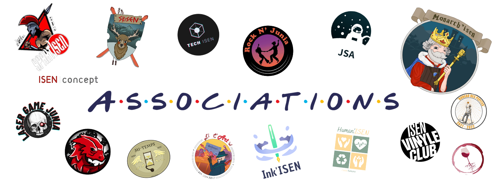
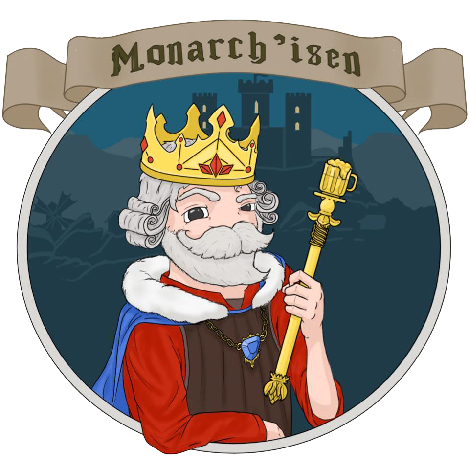
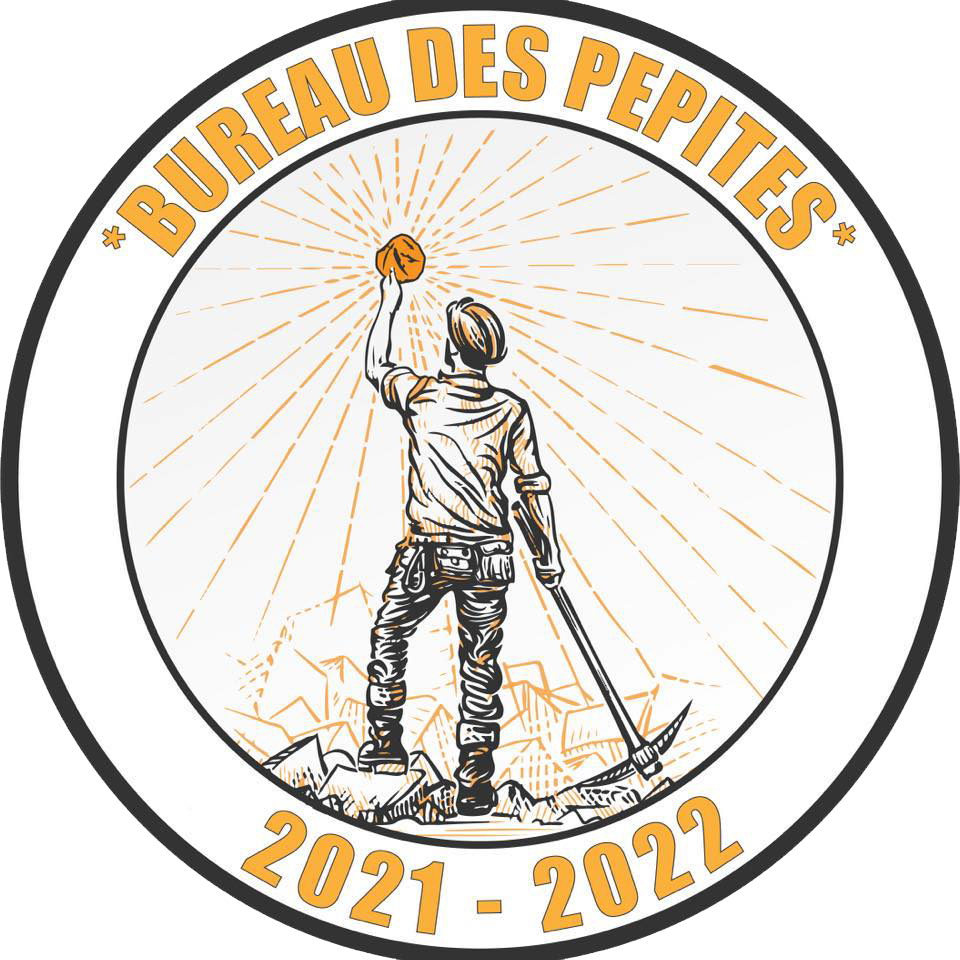
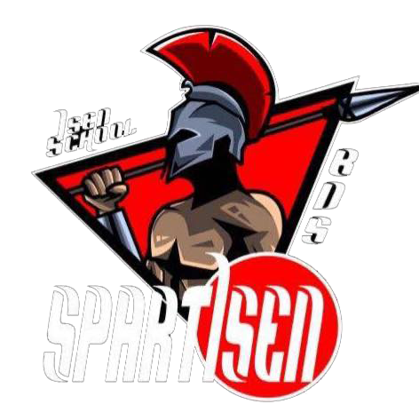
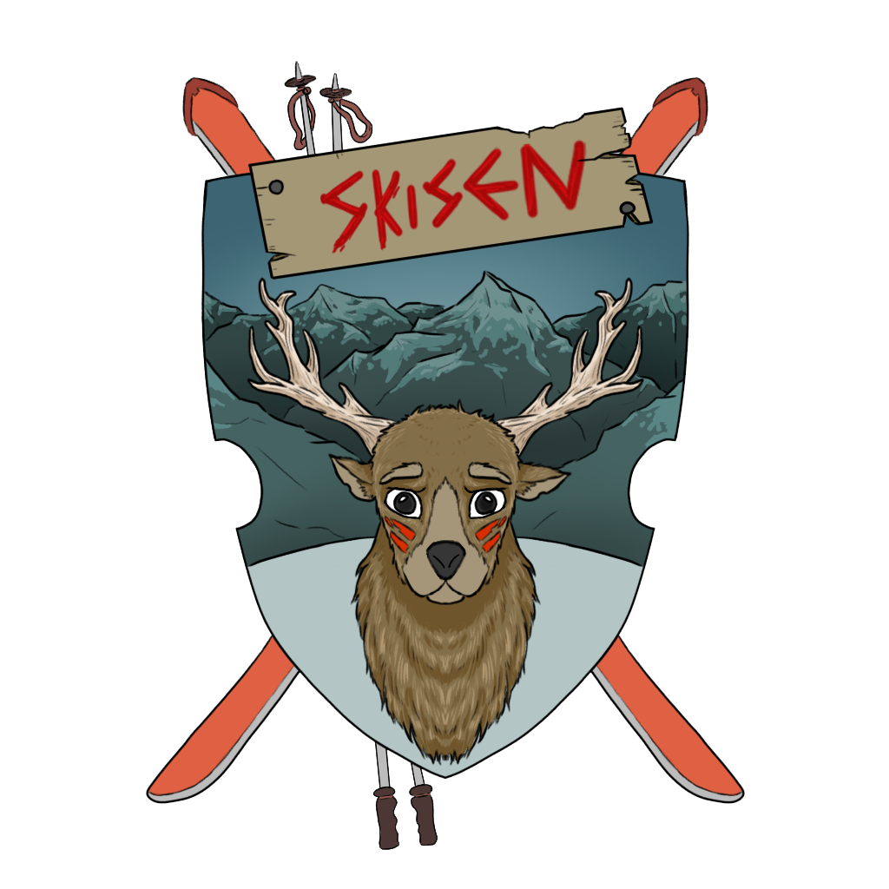
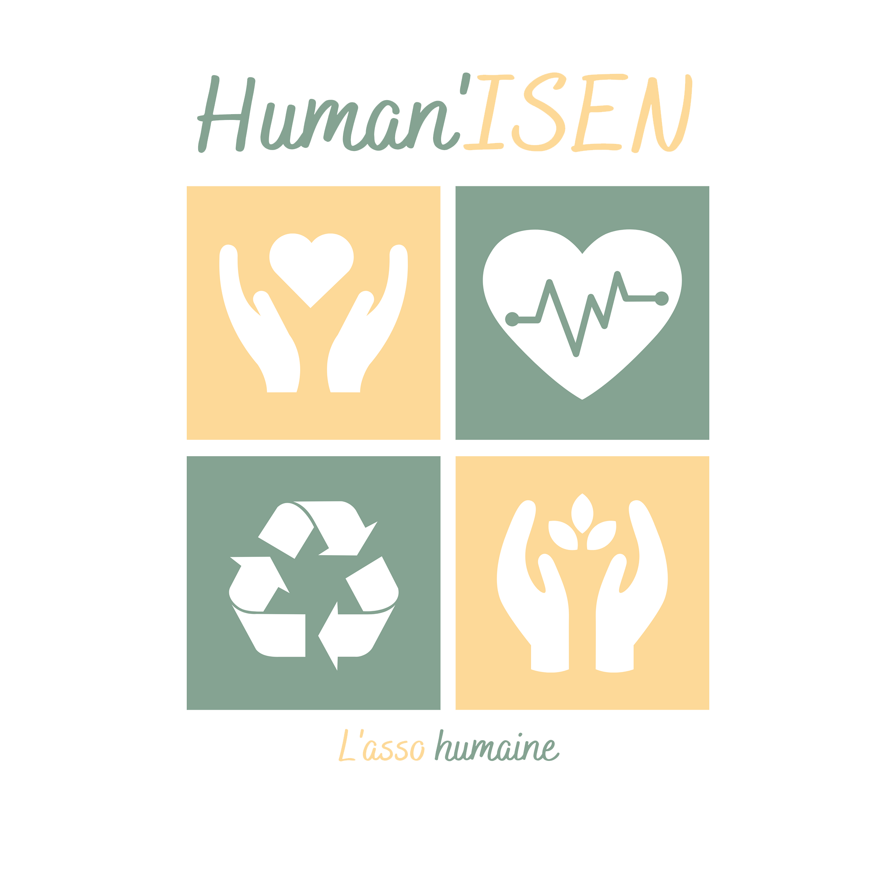
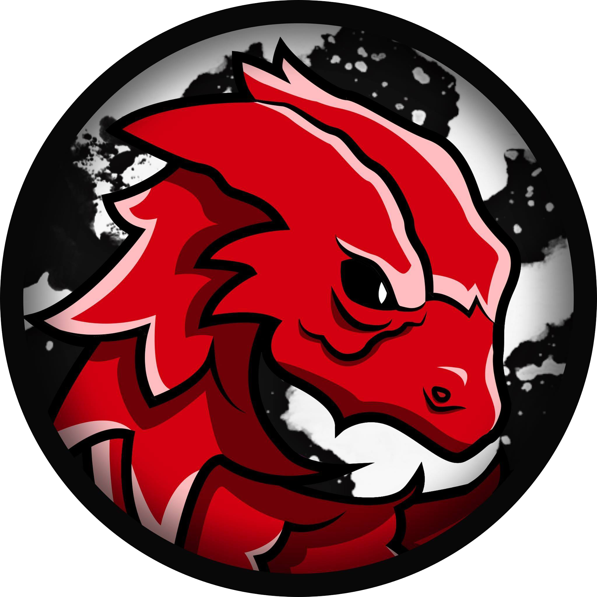
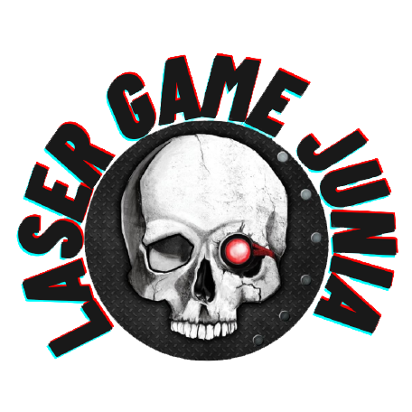
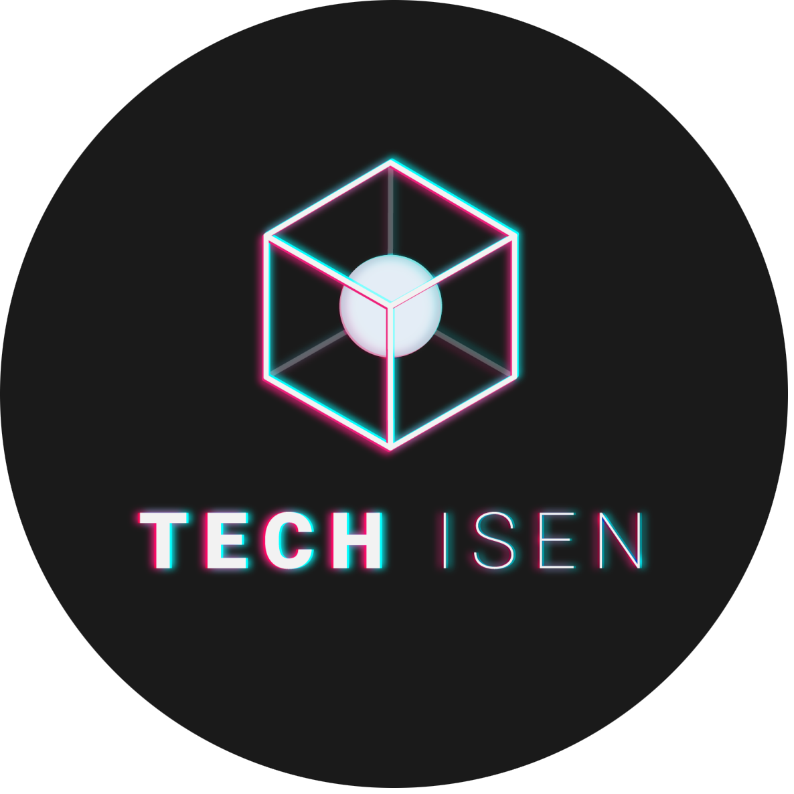
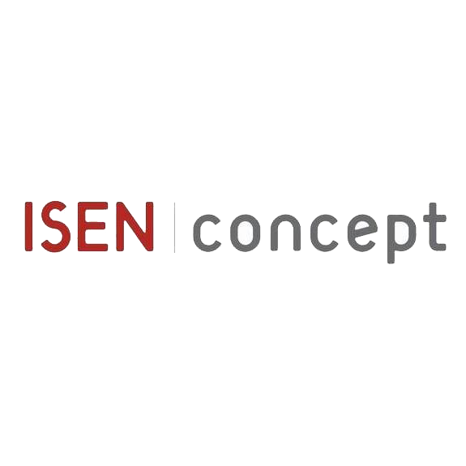

Monarch'ISEN

Le Bureau Des Elèves. C'est l'association qui organise tous les
évènements étudiants, soirées et surtout notre Zytho national.
Ils sont les représentants de tous les étudiants de l'ISEN et sont
disponibles pour venir en aide aux autres.
Présidente : Esther GUILLEMOT
Bureau Des Pépites

Le Bureau Des Promotions ou bureau d'intégration des 1ère
années est là pour vous faire visiter Lille et vous accueillir
au sein de l'école dès la rentrée.
Vous pouvez compter sur eux si vous avez perdu votre
parrain/marraine, ils se chargeront de partir à sa recherche !
Président : Edgar DHOOP
AS Junia

Le Bureau Des Sports organise des cours de sports, des
entraînements et des évênements sportifs.
Pour les plus chauds d'entre nous, le BDS peut inscrire vos
équipes sportives en championnat universitaire.
Président : Eloi PONSON
Skisen

Chaque année, le Skisen organise une semaine de ski pour tous
les étudiants de l'ISEN courant février. On skie, mais pas que.
D'autres activité sont aussi prévues.
Président : Martin BOULAY
Ink'ISEN

C'est nous, le journal de l'école ! Au fil de l'année tu pourras
suivre l'actualité de l'école.
Des potins aux recettes pour étudiant, tenez-vous au courant de
toutes les infos croustillantes.
Président : Baptiste KLEIN
Vinyle Club

Passionés de musique soyez les bienvenus! Le Vinyle club
vous propose un soutient dans la réalisation de vos propres sons.
N'hésitez pas à aller les écouter à leurs afterworks, les
JAM session ou tout simplement au bar de l'ISEN.
Président : Hadrien BERNARD
El c'art'el

Le Bureau Des Arts est une association qui organise des
évènements autourde l'art.
Si vous avez des talents de peintre, dessinateur, poète, musique,
rejoignez les !
Présidente : Cyrine KALLEL
Human'ISEN

C'est l'association solidaire de l'école.
Très axée sur l'environnement, l'entraide et le développement
durable. Ils organisent également les dons du sang pour les plus
généreux d'entre vous !
Présidente : Emmy VANDEVILLE
La MI-Temps
C'est en quelque sorte notre foyer à nous.
ouvert la journée, mais surtoutentre midi et deux pour ceux qui
voudront dévorer de délicieuxcroque-monsieur.
Président : Charles BOUSSEMART
Rock N'JUNIA

Tu veux perfectionner ton Rock ? C'est par ici.
Soirées tous les mercredi au 18 rue de Toul !
Présidents : Clémence CONVERT & Maxence DUBAELE
Junia Space Association

La tête dans les étoiles quand il s'agit demonter des projets fous,
ils sont également capable de revenir sur Terre pour organiser
de superbes conférences sur les thèmes de l'espace et de l'énergie.
Président : Thibault WARTEL
Apoph'ISEN

Cette association d'e-sport organise des LAN de jeux vidéos et
surtout des concours.
2e sur le podium de la CAEVJ, une compétition annuelle des
associations étudiantes d'e-sport de France, ils sont déterminés à
être premiers. Viens les aider si ça te tente !
Président : Armand DEFFRENNES
Plus belle la vigne

Pour les professionnels ou les amateurs, voilà une association qui
saura ravir toutes les papilles.
Du rouge, du blanc ou du rosé, chacun y trouve son compte et
repart de là en fin connaisseur.
Président : Sébastien NOIRON
Laser Game Junia

Cette association organise de parties au
Laser Game Evolution, à Lille.
De quoi semarrer entre potes.
Président : Gaëtan SCARNA
Tech'ISEN

Venez apporter de la nouveauté au monde du numérique et
anticiper les changements liés aux nouvelles technologies en
découvrant la réalité virtuelle, la réalitéaugmentée,
la technologie holographique, l'IA, ect. au traversde
plusieurs projets.
Président : Hakim DUPARCQ
ISEN Concept

C'est une junior entreprise qui aide des entreprises clientes à
concrétiser leurs projets.
Si tu cherches un avant goût du monde professionnel,
c'est par ici !
Président : Adrien BAYEULLE